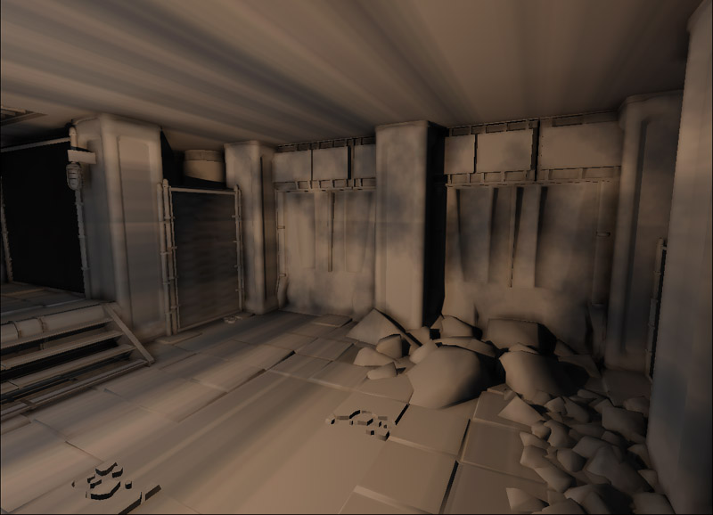

UDN
Search public documentation:
LightFunctions
日本語訳
中国翻译
한국어
Interested in the Unreal Engine?
Visit the Unreal Technology site.
Looking for jobs and company info?
Check out the Epic games site.
Questions about support via UDN?
Contact the UDN Staff
中国翻译
한국어
Interested in the Unreal Engine?
Visit the Unreal Technology site.
Looking for jobs and company info?
Check out the Epic games site.
Questions about support via UDN?
Contact the UDN Staff
UE3 Home > Lighting & Shadows > Light Functions
Light Functions
Overview
Lights functions are mathematical representations of how lights should illuminate the scene in Unreal Engine 3. By default, lights will use a constant value based on the various inputs defined by the light component; such as brightness and color. Light functions allow you to define more interesting set ups to achieve flicking lights, masked lights and strobing lights, textured lights. Light functions use the material system in Unreal Engine 3, making it really easy for artist and level designers to create and modify. Also, because light functions uses the material system, these light functions can be instanced for variations.
Decals vs Light functions
It's important to remember that light functions are still lights, thus if you wish to project textures while casting light onto objects then a light function is going to be more useful. Light functions can also project texture cubes where as decals cannot. Thus, whether something should cast light or not should be the deciding factor.What material expressions can be used?
Not all the material expressions can be used with light functions. This is because some of the expressions do not make much sense when being used within a light function. Most of the expressions however can be used. All the mathematical and texture sampler expressions work, however ones that are dependent on other render targets or mesh properties are ignored. Review the material expressions compendium as a reference to what and how these expressions work.
Texture 2D
Two dimensional textures can be used but they are best reserved for lights that specify a direction such as directional light and spot light. They can still be used for spot lights, but texture banding occurs. Directional lights can also result in texture banding if the light falls on a near perpendicular surface. Point light with a textured light function. Notice the texture banding on the ceiling and floor.  Spot light with a textured light function. As only a few surfaces receive lighting, minimal texture banding occurs. Directional light with a textured light function. Notice the texture banding on near perpendicular surfaces such as some of the walls.Texture Cube
A texture cube is used for cube mapping. Cube mapping is a method of environment mapping, with each of the textures defined as one of the sides of a cube. Cube mapping in this case produces projective texture mapping when used in a light function. Point light with a texture cubed light function. No real noticeable texture banding occurs. Spot light with a texture cubed light function. No real noticeable texture banding occurs. Directional light with a texture cubed light function. No real noticeable texture banding occurs. Does this mean that you should always use a cube map? The answer lies with what kind of projection you're performing and how you want it to affect the scene. Cube maps are very reliant on texture sets that do not create any seams. It's also difficult to pan or rotate a texture cube easily within the material.How do I rotate my texture cubed light functions?
The easiest method to do this, is to actually rotate the light actor. The light vector used in the material will be adjusted by the light actor's rotational value as well.Notes
Light functions are unable to specify the maximum brightness of a light as that is set by the light component. Light functions however act more as a scale to adjust the final brightness of the light. A light function is able to output a color, however a light functions color is not evaluated unless the light component itself uses a white color. You can use the Desaturate material expression to adjust light functions which use colored textures.What type of lights can be used?
The only light type that isn't supported are sky lights, however this makes sense since sky lights simply define the ambient light everywhere. Lights can be any these variations; dominant, movable or toggle-able and may cast dynamic shadows if desired. Light functions can no longer be created for static lights; Unreal Editor will fail to create the light function if an inappropriate light was selected.
Unreal Editor light function tutorial
Creating the light function
To create a new light function, start by creating a new material in the Content Browser. Set the package and group that you want the material to be stored in (it can even be your level, if the light function is level specific), then set what you want to call this light function. For Unreal Engine 3 to recognize that a material is going to be used as a light function, it must be explicitly set in the material's properties. Do this by expanding out the Mutually Exclusive Usage category, and then checking Used As Light Function. Create a simple light function as shown below. This light function smoothly simply interpolates the light darker and brighter. Close the Material Editor and check yes to save the material. Then save the package.Adding the light function the light
First thing to make sure is that the light is of an appropriate variation. You can right click on the light actor, and using the context menu switch between the variations. For light functions you will need to make sure to use the Dominant, Moveable or Toggle-able variations. Open the light actor's properties. Expand the Light category, and then the Light Component object. Within the Light Component object, expand the Light Component category. Click on the blue arrow next to the Light Function field. Then click on Light Function within the context menu that appears. This creates a new Light Function object. Expand the Light Function object, select the light function you made above, and click on the green arrow to set the light function object's Source Material field. If you are using a light function that uses textures you can also adjust the scale for projection purposes here.Light function properties
- Source Material - Material to use for the light function.
- Scale -
- X - Adjusts the projection scale on the X axis.
- Y - Adjusts the projection scale on the Y axis.
- Z - Adjusts the projection scale on the Z axis.
- Disabled Brightness - Brightness factor applied to the light when the light function is specified but disabled. For example in a scene capture that uses SceneCapView_LitNoShadows. This should be set to the average brightness of the light function's emissive input and should be within 0.f and 1.f.
Unrealscript light function tutorial
Embedded light function
Light functions can be created in the default properties section in Unrealscript. When you've created the light function in Unrealscript, you can then embed the created light function into an attached light component. This is useful if you wish to spawn the light at run time and have it automatically have a light function. You could also do this by creating an archetype of light setup with a light function in Unreal Editor.
class EmbeddedLightFunctionLight extends PointLightMovable;
defaultproperties
{
// Create the light function in script
Begin Object Class=LightFunction Name=MyLightFunction
SourceMaterial=Material'LightFunctionAssets.SimpleFlickeringLightFunction'
End Object
// Attach the light function to the light component
Begin Object Name=PointLightComponent0
Function=MyLightFunction
End Object
bNoDelete=false
}
Adding a light function to a dynamically created light
Light functions can also be added to lights that are exist in the level, and are dynamic, or to lights that have been spawned in game. The only downside is that light functions declare their material reference as a constant, so there is currently no way of changing this with Unrealscript. Because of this, you will need to create light functions within Unreal Editor as archetypes. You can then spawn in a new light function based on the archetype, and then assign it to the light component at run time.
class RunTimeLightFunctionLight extends PointLightMovable;
var(Light) const archetype LightFunction LightFunctionArchetype;
function PostBeginPlay()
{
local PointLightComponent PointLightComponent;
local LightFunction LightFunction;
Super.PostBeginPlay();
PointLightComponent = PointLightComponent(LightComponent);
if (PointLightComponent != None)
{
if (LightFunctionArchetype != None && LightComponent.Function == None)
{
LightFunction = new () LightFunctionArchetype.Class(LightFunctionArchetype);
if (LightFunction != None)
{
LightComponent.SetLightProperties(,, LightFunction);
}
}
PointLightComponent.UpdateColorAndBrightness();
}
}
defaultproperties
{
bNoDelete=false
}
Related Topics
- Using light functions - Development kit gem which shows you how to make various light functions.
Downloads
- Download the content used for the Unrealscript light function tutorial.